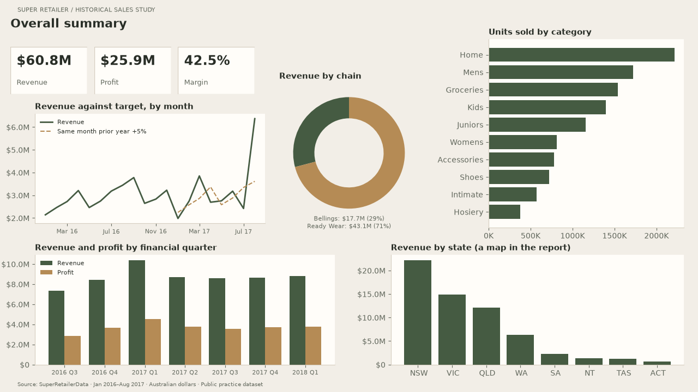
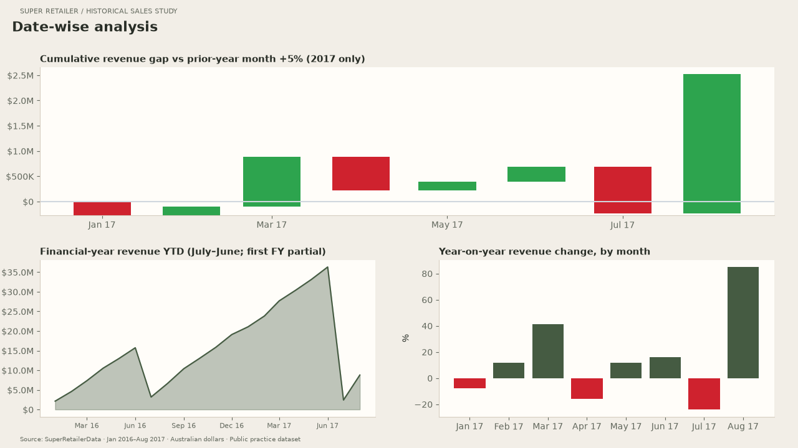
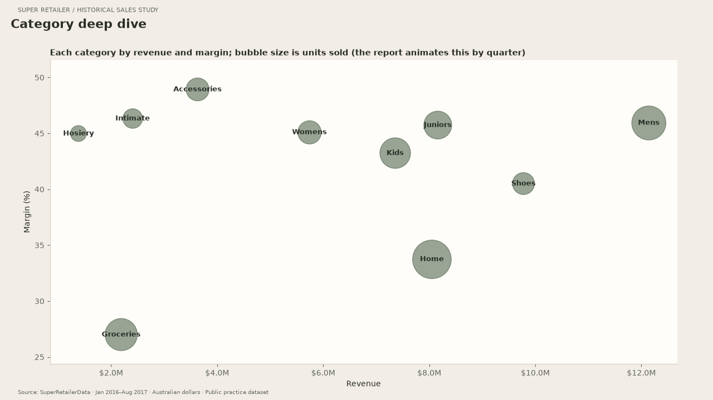
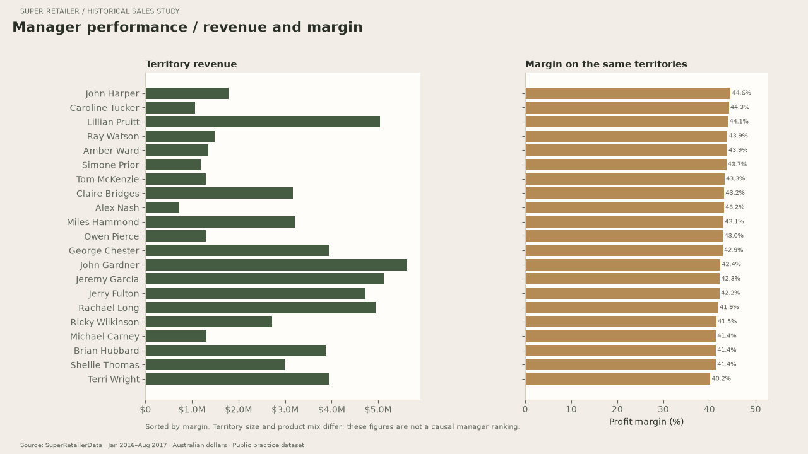
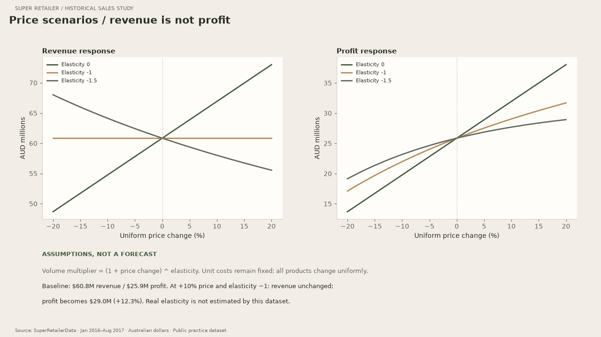

Overall summary

Revenue, profit and margin; revenue against target; revenue by chain, quarter and state; units by category.
Date-wise analysis

Comparable months against a prior-year-month +5% target, July–June financial-year YTD and year-on-year change.
Category deep dive

Every category by revenue and margin, sized by units sold. In Power BI this animates through the quarters.
Manager performance

Revenue and margin for 21 managers, sorted by margin in this export. Territory size and product mix differ. The original Power BI report drills down to suburb.
Price simulation

Revenue and profit scenarios under assumed elasticity 0, −1 and −1.5. These curves are assumptions, not a demand forecast. The original Power BI report retains its independent price and volume sliders.
These views were redrawn with Python from the data inside the .pbix file, following the report's page layout.